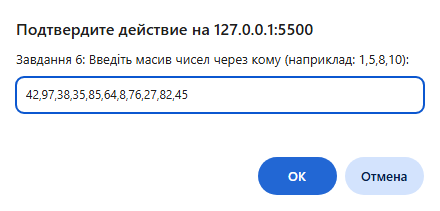
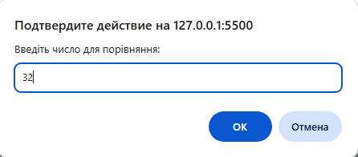
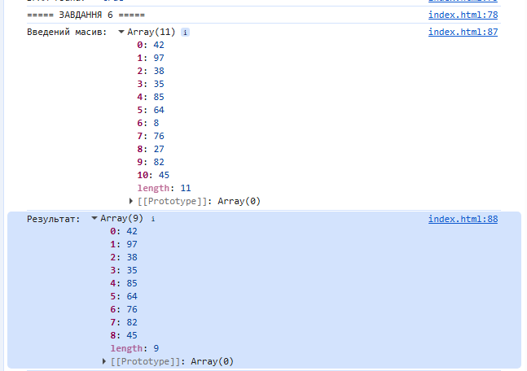

console.log("===== ЗАВДАННЯ 6 ====="); function filterArray(numbers, value) { let filtered = []; for (let num of numbers) if (num > value) filtered.push(num); return filtered; } let numbersInput = prompt("Завдання 6: Введіть масив чисел через кому (наприклад: 1,5,8,10):"); let valueInput = Number(prompt("Введіть число для порівняння:")); let numbersArray = numbersInput.split(",").map(n => Number(n.trim())); console.log("Введений масив:", numbersArray); console.log("Результат:", filterArray(numbersArray, valueInput));


